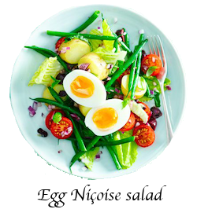

Egg Niçoise salad

A vegetarian Niçoise salad, that's packed with goodness - fibre, folate, iron, vitamin c and gluten-free too
Ingredients:
For the Dressing
- 2 tbsp rapeseed oil
- juice 1 lemon
- 1 tsp balsamic vinegar
- 1 garlic clove , grated
- ⅓ small pack basil , leaves chopped
- 3 pitted black Kalamata olive , rinsed and chopped
For the Salad
- 2 eggs
- 250g new potatoes , thickly sliced
- 200g fine green beans
- ½ red onion , very finely chopped
- 14 cherry tomatoes , halved
- 6 romaine lettuces leaves, torn into bite-sized pieces
- 6 pitted black Kalamata olive , rinsed and halved
Steps:
- Mix the dressing ingredients together in a small bowl with 1 tbsp water.
- Meanwhile boil the potatoes for 7 mins, add the beans and boil 5 mins more or until both are just tender, then drain. Boil 2 eggs for 8 minutes then shell and halve.
- Toss the beans, potatoes and remaining salad ingredients, except the eggs, together in a large bowl with half the dressing. Arrange the eggs on top and drizzle over the remaining dressing.